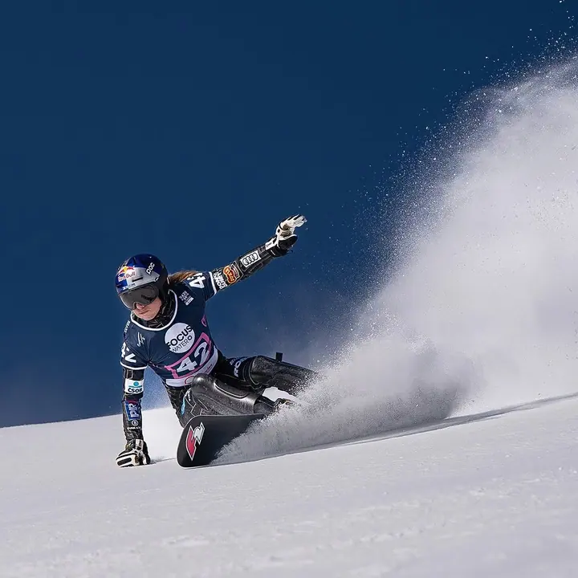
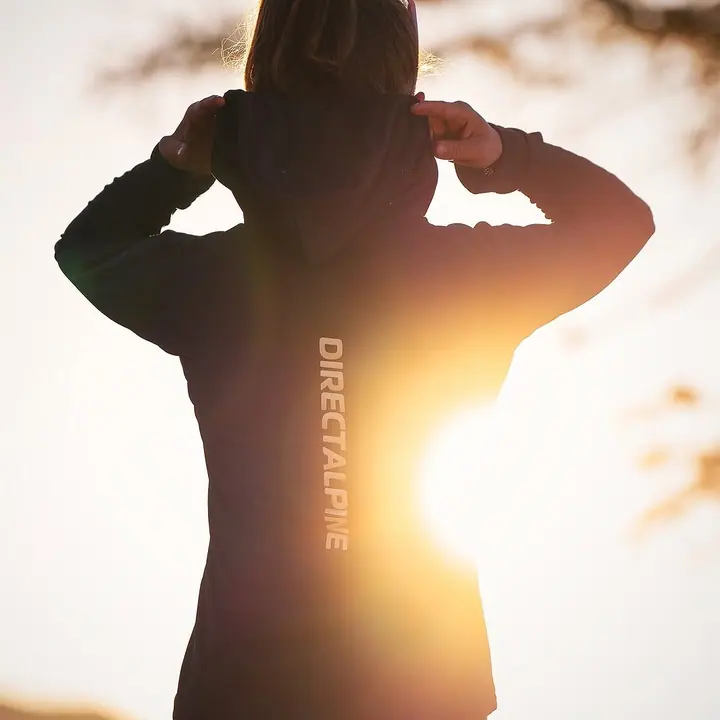
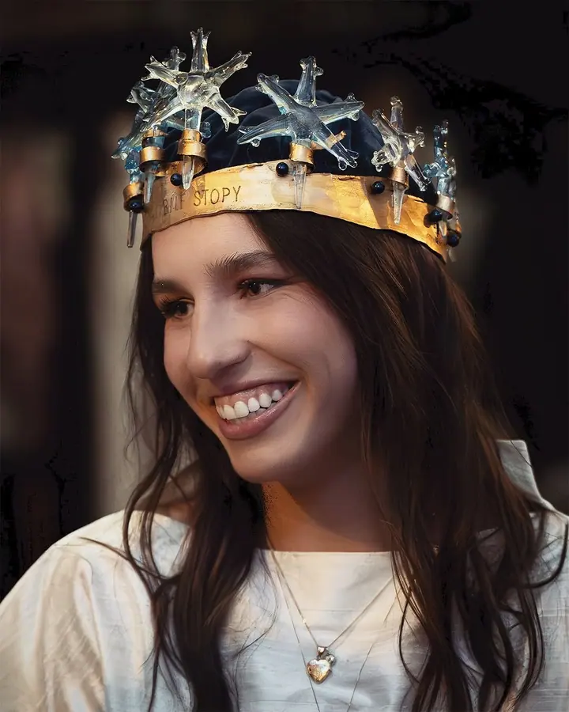
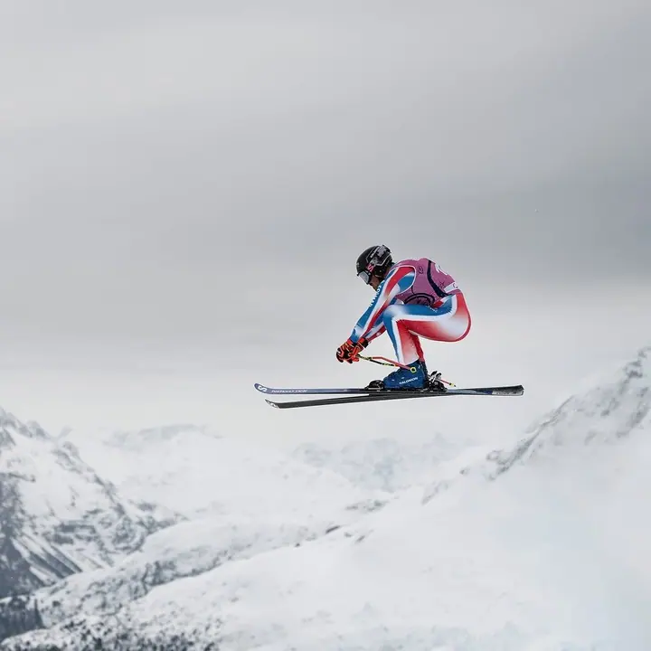
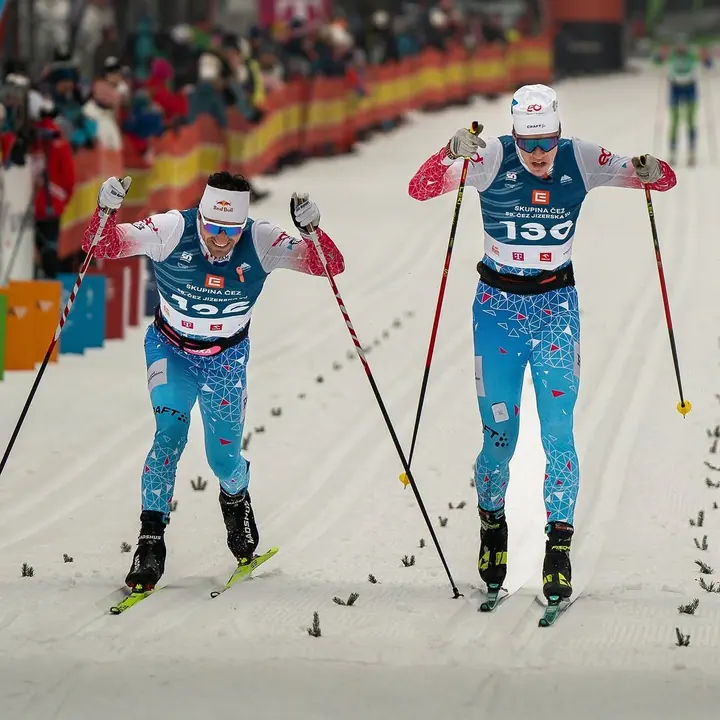
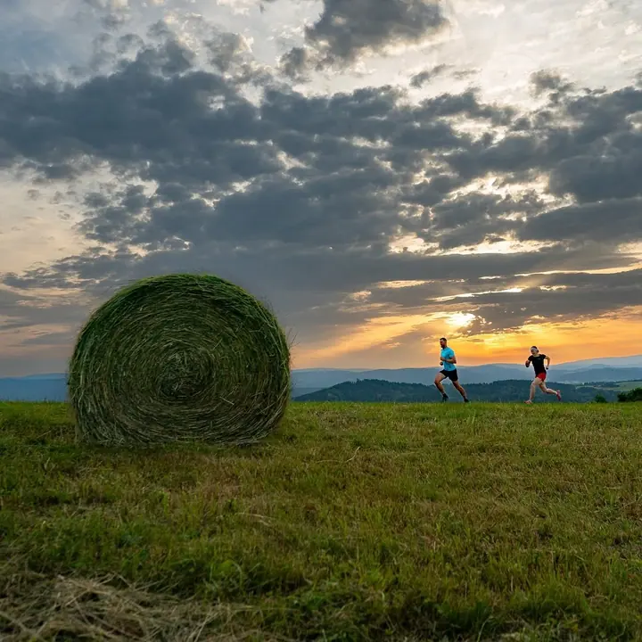
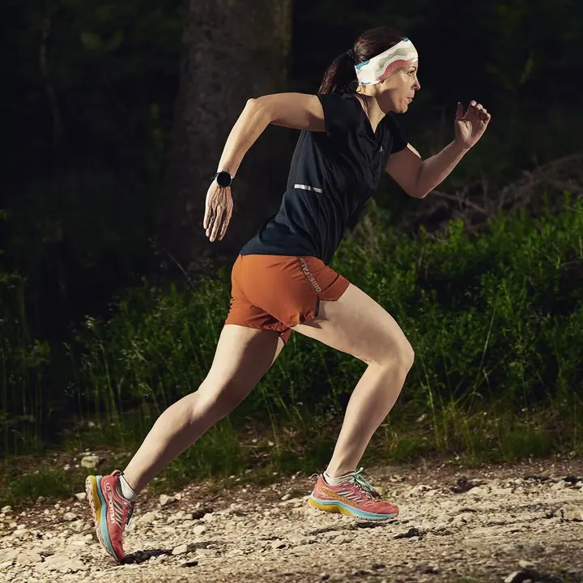
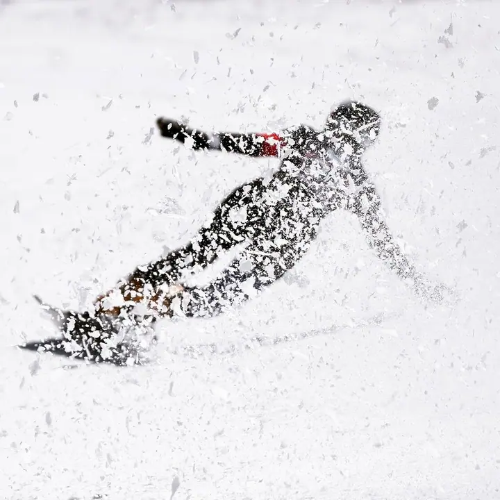
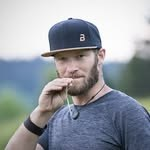

01 / 03
Sport
Fotím závody, sportovce i celé týmy, od Světového poháru v běžeckém lyžování po Ironman nebo Rally Bohemia. Za fotkou nabitou adrenalinem a emocemi dojedu kamkoliv.
Zeptat se na termín→







Fotky nabité adrenalinem a emocemi
Zeptat se na termín →(01) Ahoj
Jmenuji se Jiří Bošek, ale říkejte mi Bóša. Fotím sport a reklamu , nejradši tam, kde se něco děje a lidé dávají do pohybu všechno . Za dobrou fotkou se nebojím vyrazit kamkoliv na světě.
3 623lidí sleduje mou práci na Instagramu
226příspěvků s fotkami a příběhy
(02) Co fotím
01 / 03
Fotím závody, sportovce i celé týmy, od Světového poháru v běžeckém lyžování po Ironman nebo Rally Bohemia. Za fotkou nabitou adrenalinem a emocemi dojedu kamkoliv.
Zeptat se na termín→02 / 03
Fotím kampaně pro outdoorové a sportovní značky, takže oblečení a vybavení ukazuju v akci a v terénu. Záleží mi na atmosféře, detailu a nápadu.
Zeptat se na termín→Dále nabízím
Jako ambasador Sony a Godox rád předávám, co jsem se naučil na závodech a při focení reklamy. Pomůžu vám zlepšit vaše fotky a zorientovat se ve vybavení.
↗(04) Postup
Od první zprávy po hotovou galerii.
Krok 1 z 4
Napište mi, co potřebujete: závod, kampaň pro značku nebo konzultaci. Probereme cíl, termín a místo.
Krok 2 z 4
Domluvíme lokaci, světlo a scénář. U reklamy si projdeme produkt a příběh, který má fotka vyprávět.
Krok 3 z 4
Jsem tam, kde se věci dějí, na trati, v horách nebo v terénu. Hlídám atmosféru, detail a správný moment.
Krok 4 z 4
Vyberu nejsilnější snímky, upravím je a předám vám je v podobě připravené pro web, tisk nebo média.
Za fotkou dojedu kamkoliv na světě
(05) Za objektivem
Jsem český fotograf a fotit reklamu a sport je pro mě životní styl. Mám rád život a hlavně lidi, a to je na fotkách vidět. Hledám atmosféru, detail a nápad, který snímek odliší od ostatních.
Fotil jsem na olympijských hrách v Londýně 2012, na mistrovství světa v běžeckém lyžování v letech 2009 a 2019, na Světovém poháru, Londýnském maratonu, triatlonu Ironman UK 70.3 i na nonstop cyklistickém závodě RAAM napříč Amerikou. Moje fotky vycházely v Deníku a v Reflexu.
V reklamě pracuji hlavně pro outdoorové a sportovní značky, například Mammut, Marmot, Direct Alpine, Singing Rock nebo Bianchi. Jsem ambasadorem Sony a Godox a to, co jsem se naučil, rád předávám dál jako fotokouč.

Jiří
Jiří Bošek · Reklamní a sportovní fotograf
Ano. Pro dobrou fotku rád dojedu kamkoliv na světě, fotil jsem třeba v Londýně nebo v Americe. Cestu a logistiku probereme předem.
Mezi mými klienty jsou outdoorové a sportovní značky jako Mammut, Black Yak, Marmot, Lowe Alpine, Bianchi, Ortlieb, Direct Alpine, Singing Rock, Royal Bay, Viking nebo Kästle.
Obojí. Fotím velké závody i individuální focení sportovců a týmů pro jejich partnery a sociální sítě.
Přizpůsobím ho vám. Podle vaší úrovně se zaměříme na techniku, práci se světlem nebo fotografování v pohybu. Podrobnosti domluvíme individuálně.
(07) Kontakt
Napište pár vět o tom, co si představujete, a termín, který se vám hodí.
bosa@bosa.cz